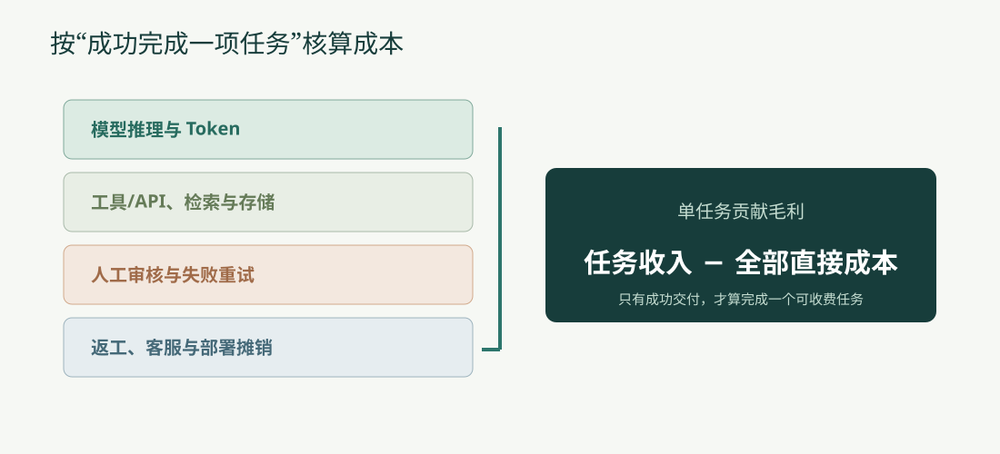

01｜核心判断：AI 产品卖的是业务结果，不是模型调用
AI 创业最常见的误判，是把模型能完成 Demo 当成产品已经成立，把员工愿意试用当成企业愿意付费，把单次推理便宜当成单位经济为正，以及把公司愿意内部孵化当成创业者拥有真正经营权。
AI 产品的商业价值来自在可重复的业务流程中，以可接受的成本、错误率和治理成本，持续完成客户愿意付费的任务。
02｜采用率与商业化不是同一个指标
Stanford HAI《AI Index 2026》引用的组织调查显示，88% 的受访组织报告至少在一个业务职能中使用 AI，约 70% 报告至少在一个职能中使用生成式 AI；但 AI Agent 在多数职能中的规模化部署仍处于个位数水平。[S1]
与此同时，OECD 基于企业层面的统计显示，2025 年 OECD 国家中报告使用 AI 的企业比例为 20.2%，大型企业约 52.0%，小型企业约 17.4%。[S2]
这两个数字不能直接比较或取平均：Stanford 报告引用的是管理者调查中的组织采用情况，OECD 统计采用企业总体口径、企业规模门槛和特定国家覆盖；“至少一个职能使用 AI”与“企业正式采用 AI”也不是完全相同的定义。
两组数据共同提示：AI 已进入很多组织的工作场景，但正式采用、流程级部署、规模化使用和可验证利润贡献是四个不同阶段。
03｜从 Demo 到付费：企业采购的真实门槛
- 问题足够重要：任务频率高、人工成本或错误损失可测量，并且有明确预算负责人。
- 流程足够清楚：输入、输出、异常情况、人工复核和责任归属可以定义。
- 质量足够稳定：不仅在演示样例上正确，还要在真实数据、长尾场景和异常输入中稳定。
- 能嵌入工作流：与现有系统、权限、数据、审批和日志打通，不让用户为了 AI 额外维护一套流程。
- 经济账成立：客户节约的时间或增加的收入，足以覆盖订阅、部署、培训、人工审核和切换成本。
如果产品只是在聊天窗口中提供更漂亮的文本，却没有改变任务完成时间、错误率、转化率或业务结果，它可能是一个好用工具，但未必是一个可持续的企业产品。
04｜生产率证据：为什么实验结果不能简单外推
| 研究 | 样本与任务 | 结果 | 外推边界 |
|---|---|---|---|
| NBER 客服研究 | 5179 名客服人员，AI 实时建议 | 平均每小时解决问题数量提高约 14% | 特定客服任务，经验水平影响效果 |
| NBER 知识工作实验 | 66 家企业、7137 名知识工作者 | 邮件处理时间下降，但任务数量和构成未显著改变 | 个体工具使用不等于组织流程重构 |
| METR 软件工程 RCT | 16 名资深开发者、246 项真实任务 | 2025 年初工具使样本任务完成时间增加 19% | 仅适用于熟悉的大型开源代码库与当时工具 |
客户支持研究发现，AI 助手使平均每小时解决问题数量提高约 14%；对经验较少的员工，提升更大。[S3] NBER 2025 年对 66 家企业、7137 名知识工作者开展的现场实验发现，使用集成在邮件、会议和写作工具中的 AI 后，使用者邮件处理时间减少，但没有发现任务数量或任务构成发生显著变化。[S4]
METR 2025 年对 16 名资深开源开发者、246 项真实任务进行随机实验，发现当时的 AI 工具使完成任务时间增加 19%。该研究只覆盖熟悉的大型开源代码库和 2025 年初工具，作者明确提醒不能外推到大多数开发者或其他任务。[S5] 但不能把这项早期结果当成 2026 年的当前生产率结论。METR 在 2026 年 2 月发布后续实验说明：原研究参与者子样本的估计结果转为约 18% 加速，但置信区间跨过零；新招募开发者估计约 4% 加速，同样不显著。后续研究受到参与者选择、任务选择、报酬变化和多 Agent 并行计时困难等偏差影响，METR 明确认为该数据无法可靠估计当前生产率效应。[S9]
这些结果不是简单互相否定。它们测量的是不同任务、不同用户、不同工具和不同成功标准。AI 可能在标准化、可反馈、经验较少的任务中带来明显帮助，也可能在复杂、隐性要求多、质量门槛高的任务中增加核验和返工。
因此，创业者不能把模型 benchmark 提升直接等同于客户生产率提升，必须在目标客户的真实工作流里做对照测试。
05｜单位经济：按成功任务核算，而不是只看 Token

建议用“每个成功完成的任务”作为基本核算单位：
单任务直接成本 = 模型推理 + 工具/API + 检索与存储 + 人工审核 + 失败重试 + 返工 + 客服支持
单任务贡献毛利 = 单任务收入 − 单任务直接成本
客户年度净收益 = 年任务量 × 单任务可兑现节省 − 软件费用 − 部署集成 − 培训变更成本
CAC 回收期 = 获客成本 ÷ 客户月度毛利贡献
- Token 价格不是任务成本：长上下文、多轮 Agent、工具调用、失败重试和人工复核都会改变单任务成本。
- 模型调用成功不等于业务任务成功：生成了文本，不代表发票已正确入账、工单已关闭或客户问题已解决。
- 人机协作成本必须入账：如果 AI 输出需要专家逐条审核，审核时间可能抵消模型节省的时间。
- 部署成本必须摊销：数据清洗、权限集成、工作流配置和私有化部署需要按客户生命周期分摊。
- 毛利不等于利润：销售、实施、合规、研发和客户成功成本仍然存在。
06｜产品定价：按席位、用量、任务还是结果
| 定价方式 | 优点 | 风险 | 适合场景 |
|---|---|---|---|
| 按席位 | 预算稳定、采购容易 | 低使用率导致续费困难 | 办公助手、团队协作工具 |
| 按用量/Token | 与推理成本相连 | 客户账单不稳定 | API、开发者平台 |
| 按成功任务 | 更接近客户价值 | 必须定义成功并核算失败成本 | 文档处理、审核、工单 |
| 按结果/效果 | 价值叙事强 | 归因复杂、容易发生争议 | 线索、运营和可量化结果 |
定价不应只由模型成本倒推。更合理的起点是客户当前流程总成本、替代方案、错误损失和支付意愿，再检查产品能否在合理毛利下交付。
07｜AI 应用的壁垒：模型只是输入，不是全部护城河
- 工作流嵌入：连接审批、CRM、ERP、工单、财务或专业软件，形成流程依赖。
- 合法的数据资产：拥有可合法使用、持续更新、质量可评估的数据，而不是简单囤积客户文件。
- 评估与反馈系统：持续测量错误、成功率、边界条件和客户反馈，形成领域评估集。
- 分发与客户关系：掌握稳定客户入口、销售渠道、行业合作伙伴和采购信任。
- 领域知识与责任治理：知道哪些任务可以自动化、哪些必须人工复核，如何处理异常和责任。
- 可靠性与服务能力：稳定运行、可审计、可回滚、可解释，出现错误时有清晰处理机制。
“模型 API + Prompt + 聊天界面”通常不足以形成长期壁垒。模型价格和能力会变化，竞争者也能接入同类模型。真正难复制的是客户工作流、合法数据、持续反馈、分发能力和可靠交付。
08｜企业采用障碍：为什么“大家都在试”不代表“大家都能用”
OECD 2025 年对中小企业的调查显示，在未使用生成式 AI 的企业中，约 57% 认为它不适合自己的工作；约 54% 担心版权、法律或监管问题；约 52% 担心输入模型的信息如何被处理。该调查覆盖奥地利、加拿大、德国、爱尔兰、日本、韩国和英国的中小企业样本，不能直接代表中国全部中小企业。[S6]
企业产品的竞争并不只是模型效果。真正的阻碍可能是数据能否进入系统、结果能否被信任、员工是否会使用、流程负责人是否愿意改变，以及出现错误时由谁承担责任。
09｜内部孵化 vs 独立创业：资源优势与控制权风险
| 维度 | 内部孵化 | 独立创业 |
|---|---|---|
| 客户入口 | 可能直接触达存量客户 | 需要自行建立渠道 |
| 数据与系统 | 可能获得内部数据和接口 | 需要逐步谈判授权 |
| 资金与算力 | 可能由公司提供 | 依赖融资或收入 |
| 决策权 | 受公司战略、审批和预算影响 | 创始团队自主性更高 |
| IP 与收益 | 需要明确雇佣、职务成果和合同约定 | 创始团队需自行建立产权结构 |
| 外部销售 | 可能受集团业务边界限制 | 市场选择更自由 |
| 失败成本 | 可能回到原组织或并入其他部门 | 需要独立承担现金流和团队成本 |
内部孵化能够提供独立创业者难以快速获得的客户、分发、品牌、行业数据、专业人员、采购关系、算力和初始预算。但这些资源是否真正可用，取决于内部治理结构。
入职前必须核对的十个问题
- 产品负责人是否有明确产品决策权？
- 预算、算力、人员和外部采购权限是否明确？
- 是否能直接接触真实客户和一线业务流程？
- 内部数据能否合法使用，数据责任由谁承担？
- 职务成果、代码、专利、模型微调成果和客户数据权属如何约定？
- 产品是否允许服务集团以外的客户？
- 收入、成本和 P&L 由谁核算？
- 股权、奖金、期权或项目收益分配如何兑现？
- 内部赞助人离职或战略调整后，项目如何继续？
- 项目终止、团队转岗或独立拆分时，客户、代码、数据和人员如何处理？
这些问题应在劳动合同、保密与知识产权协议、项目授权文件和激励方案中核对，不能只依赖口头承诺。具体权属问题需要根据合同和适用法律进行专业审查。
10｜中国市场合规：内部工具与公众服务要区分
《生成式人工智能服务管理暂行办法》第二条规定，利用生成式人工智能技术向境内公众提供生成内容的服务适用该办法；企业、教育科研机构等研发和应用技术但未向境内公众提供相关服务的，不适用该办法的规定。[S7]
这并不意味着内部工具不受法律约束。办法本身要求遵守网络安全、数据安全、个人信息保护等法律；训练数据来源、知识产权、个人信息处理、商业秘密和用户输入记录仍然需要合规管理。[S7]
《人工智能生成合成内容标识办法》自 2025 年 9 月 1 日起施行，明确显式标识和隐式标识要求，并要求相关服务提供者和内容传播平台按规定处理生成合成内容标识。[S8]
项目立项时就应判断产品是内部辅助工具、面向特定企业的私有化服务，还是面向公众提供生成式内容的服务；不同场景的监管义务可能不同。
11｜90 天验证计划：先验证任务，再扩大团队
| 阶段 | 时间 | 目标 | 必须交付 |
|---|---|---|---|
| 问题验证 | 第 1—2 周 | 找到高频、昂贵、责任明确的任务 | 访谈记录、流程图、基线成本 |
| 原型验证 | 第 3—4 周 | 用真实样本测试任务成功率 | 评估集、错误分类、人工审核时间 |
| 试点验证 | 第 5—8 周 | 在真实客户/团队中运行 | 完成率、节省时间、单任务成本 |
| 付费验证 | 第 9—12 周 | 检验付费和复用 | 付费合同、续费意愿、毛利和 CAC 假设 |
这是一套建议的验证节奏，不是所有行业通用的实证周期。应设置停止条件：没有明确预算负责人；客户只愿意免费试用；任务成功率依赖大量专家修正；每个客户都要定制开发；数据授权和知识产权无法解决；或直接成本无法支持合理毛利。
12｜结论：AI 创业的核心是可兑现的流程价值
AI 应用创业不是模型能力竞赛的简单下游。真正的产品必须同时满足客户问题重要、任务可评估、工作流可集成、结果可信、单位经济成立和分发可持续。
对内部孵化而言，关键是把公司的客户、数据、渠道和算力优势变成明确的经营授权，而不是把创业者变成没有预算和决策权的创新项目经理。对独立创业而言，关键是先验证付费任务和可复制获客，再扩大团队和模型投入。
最重要的判断标准不是 Demo 是否惊艳，也不是使用了多大的模型，而是：客户是否愿意为一个持续、可靠、可审计、成本可控的业务结果付费，并且企业能否在交付后留下正向的单位经济。
相关研究
- 商业常识：现金流、机会成本与可持续需求：用商业基本面检验 AI 产品的真实价值。
- 资源入口、依赖关系与权力转移：理解数据、渠道和工作流控制权如何形成竞争优势。
来源定位：正文 [S1]—[S8] 指向官方报告、学术实验和中国监管原文。
参考来源
- Stanford HAI，《AI Index Report 2026》，Chapter 4: Economy，2026-04。报告
- OECD，AI use by individuals surges across the OECD as adoption by firms continues to expand，2026-01。原文
- NBER，Generative AI at Work，Working Paper 31161，2023-04。论文
- NBER，Shifting Work Patterns with Generative AI，Working Paper 33795，2025-05，2025-11 修订。论文
- METR，Measuring the Impact of Early-2025 AI on Experienced Open-Source Developer Productivity，2025-07-10。研究
- OECD，Generative AI and the SME Workforce: New Survey Evidence，2025-11-05。报告
- 国家互联网信息办公室等，《生成式人工智能服务管理暂行办法》，2023-07-13。原文
- 国家互联网信息办公室等，《人工智能生成合成内容标识办法》，2025-03-14 发布，2025-09-01 施行。原文
- METR，We are Changing our Developer Productivity Experiment Design，2026-02-24。研究更新